Garage Door Selection
Find a garage door style for your home.
Browse our project and door photos for inspiration. Contact us with a photo you like and we can discuss available options for your home.
Browse Garage Doors
Garage door inspiration.
Explore different looks, panel layouts, colours and window combinations.
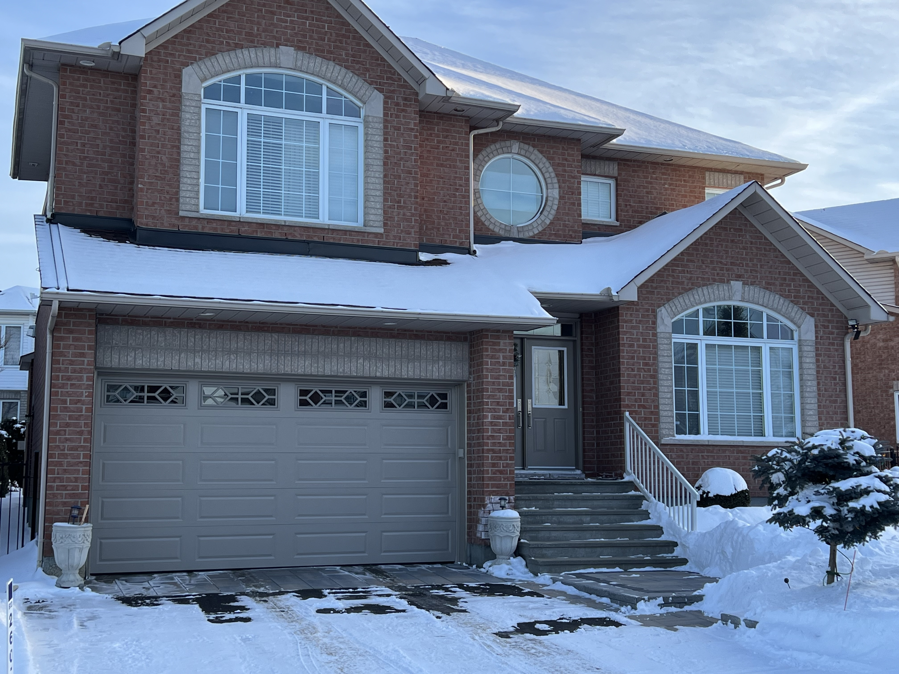
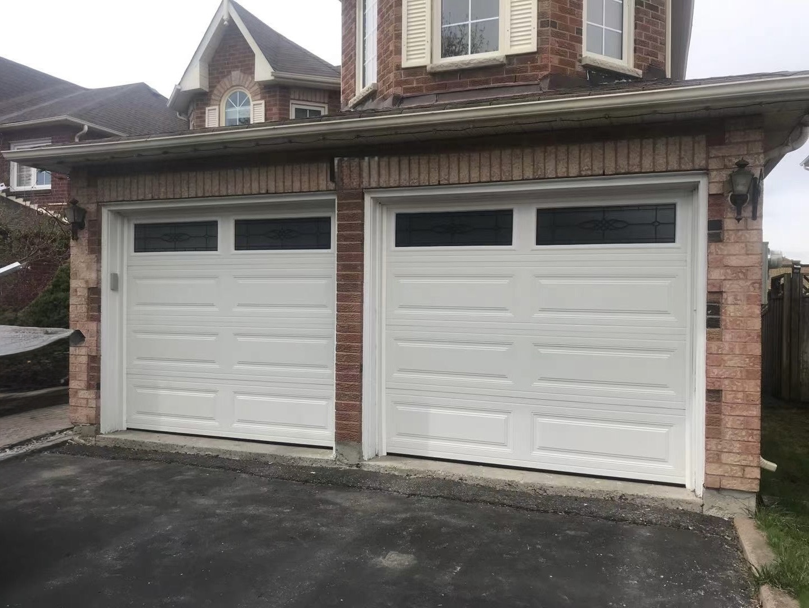
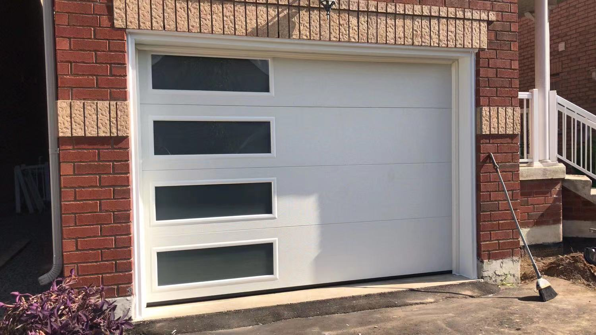
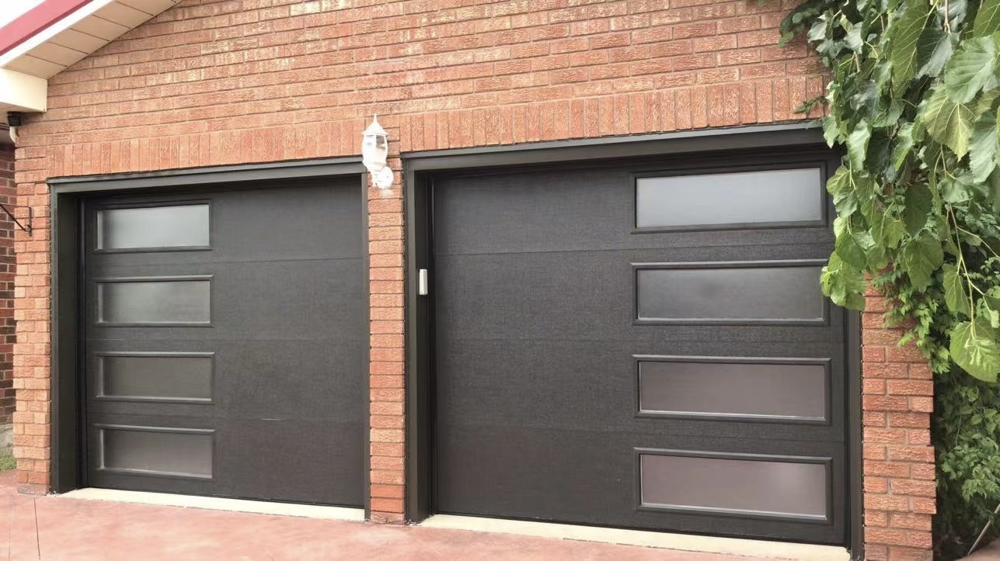
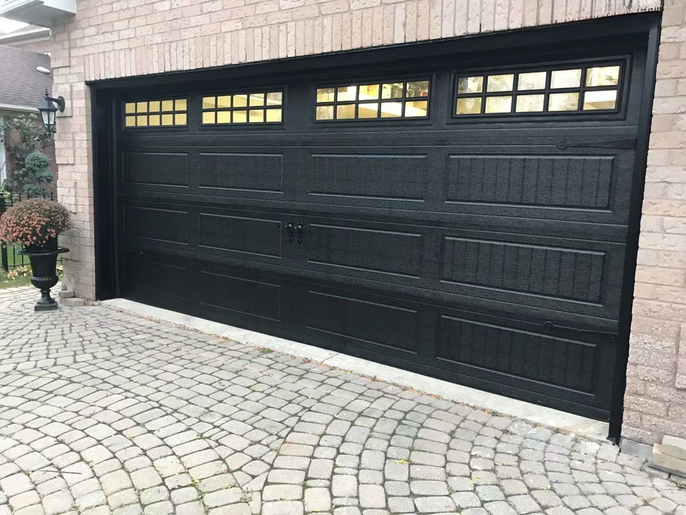
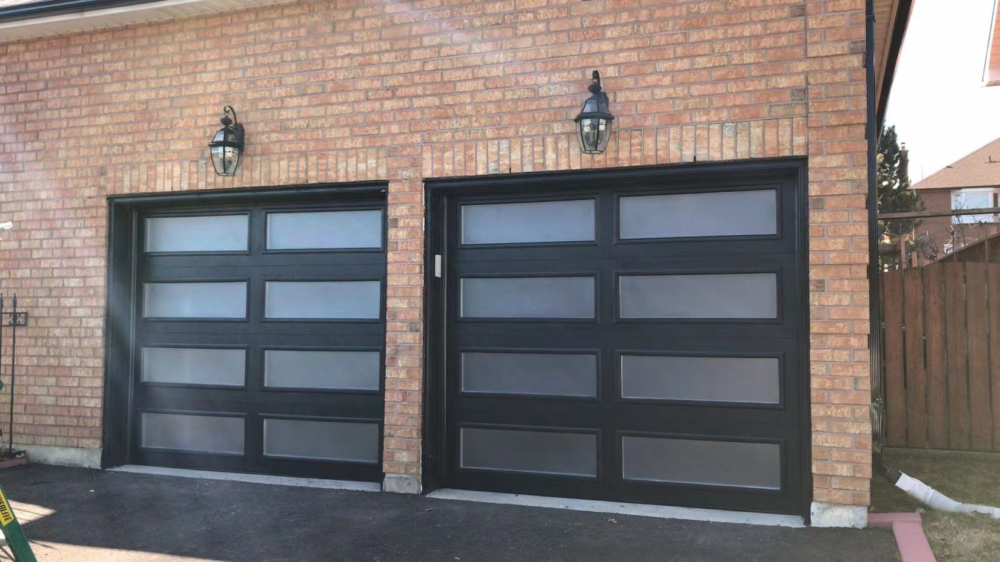
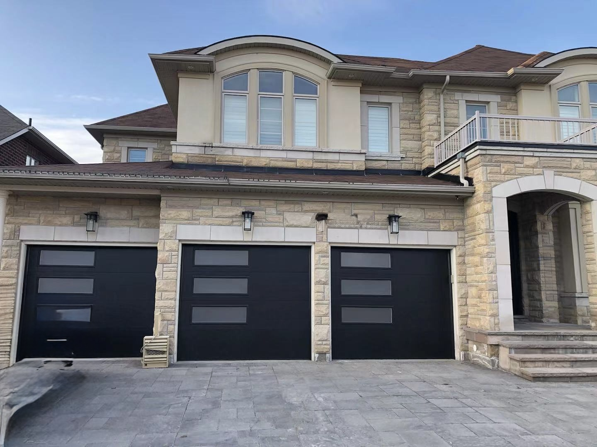
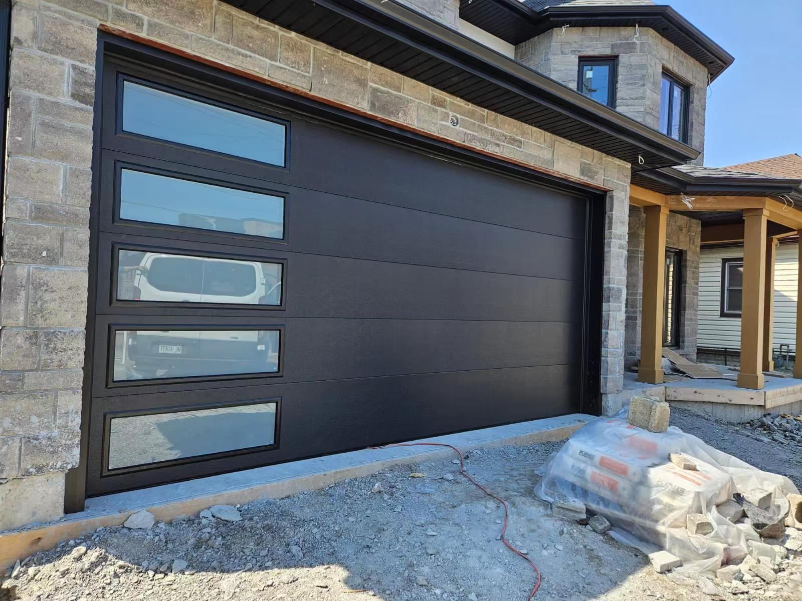
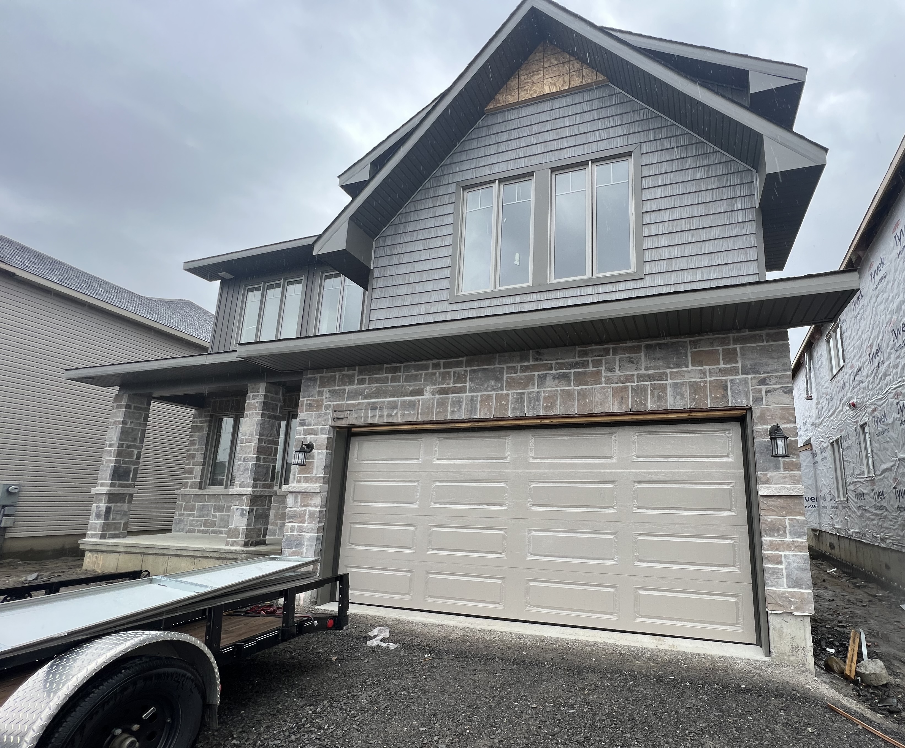
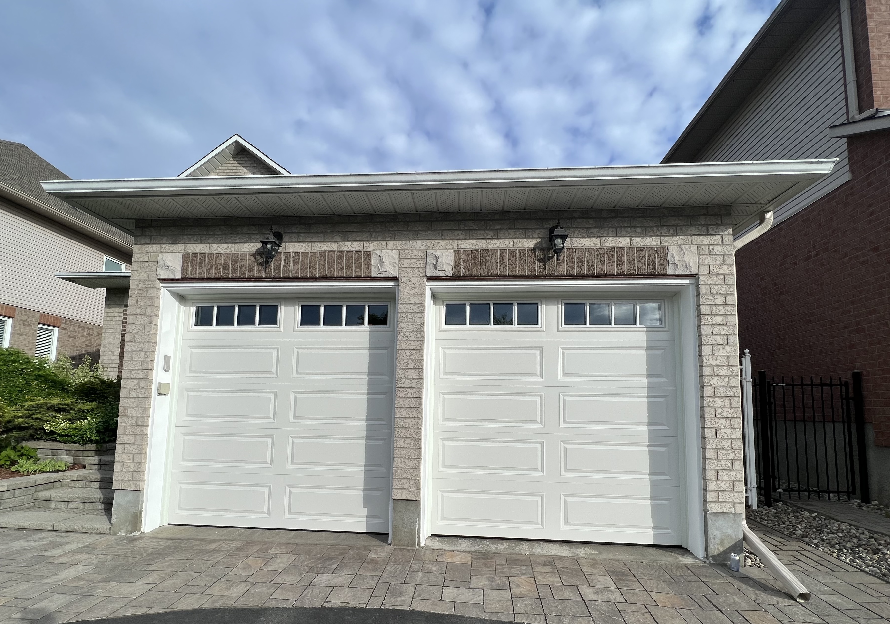
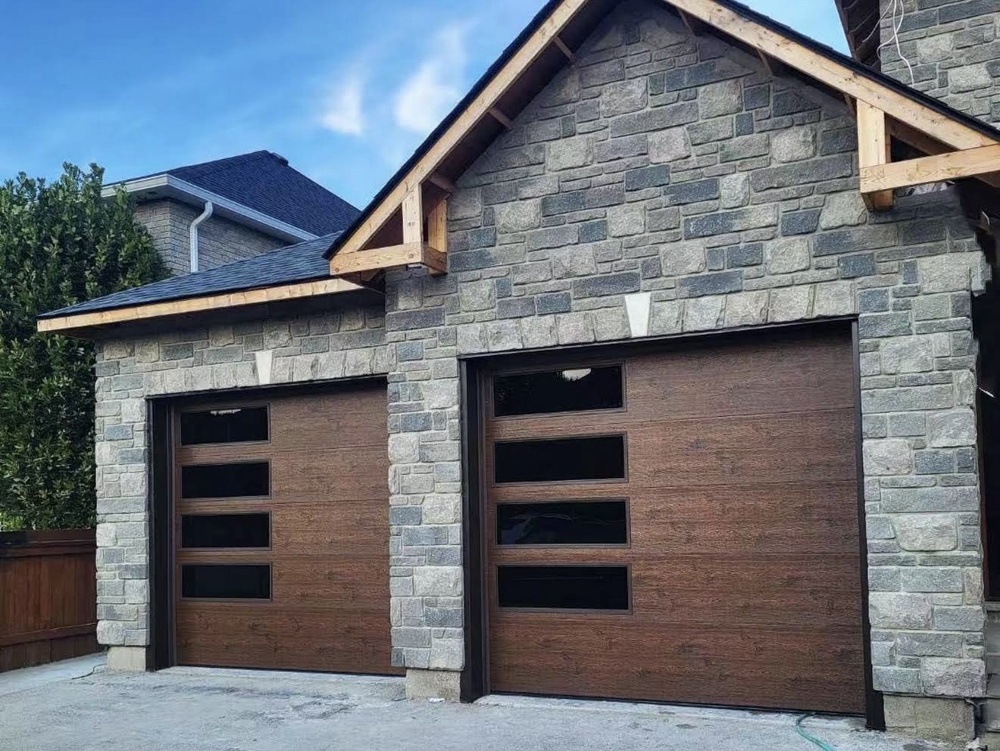
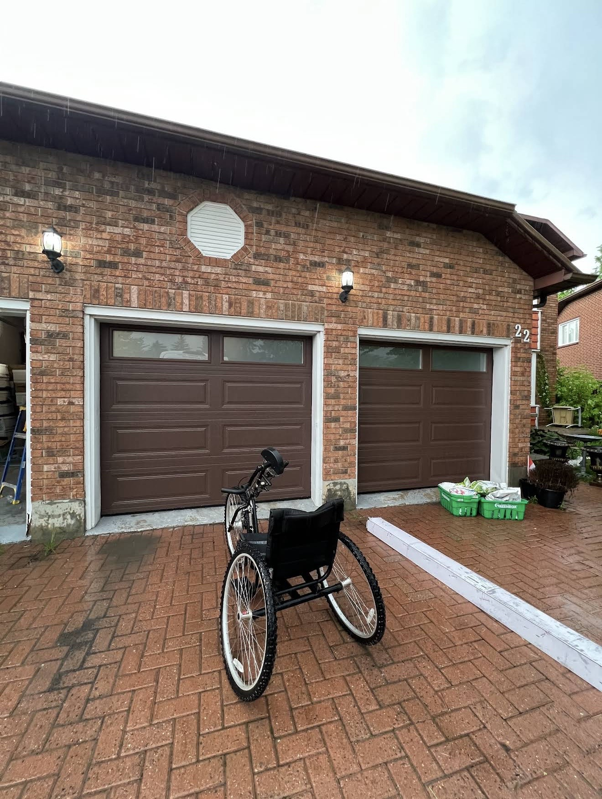
Door Models & Sizes
Choose your door style & size.
Compare our four garage door models in 16' × 7' and 8' × 7' configurations.
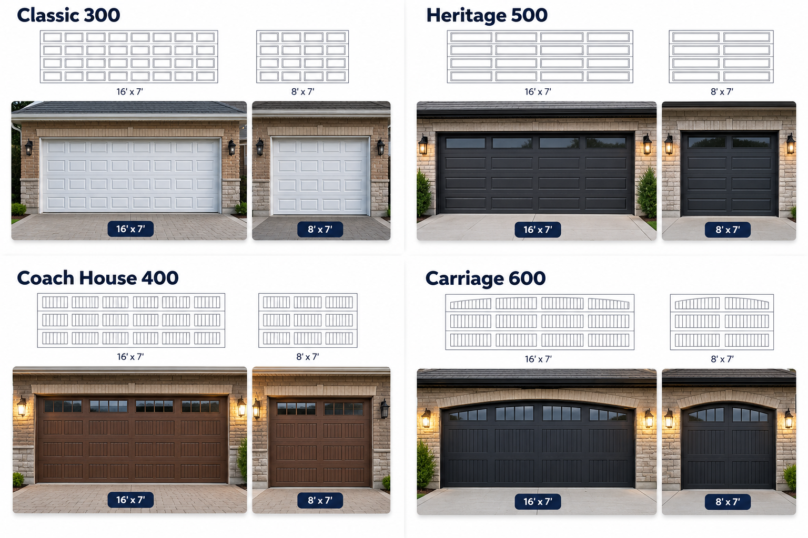
Colour Options
Choose your finish.
A rich selection of classic colours, perfectly paired with various model patterns and layouts.
White
Almond
Sandstone
Charcoal
Brown
Dark Brown
Black
Woodgrain
Walnut Plank
Walnut
Black Matt
* The actual colour is subject to colour sample.
Window & Glass Options
Customize the details.
See a garage door you like?
Send us the photo or tell us the style you are interested in and we can discuss options for your home.